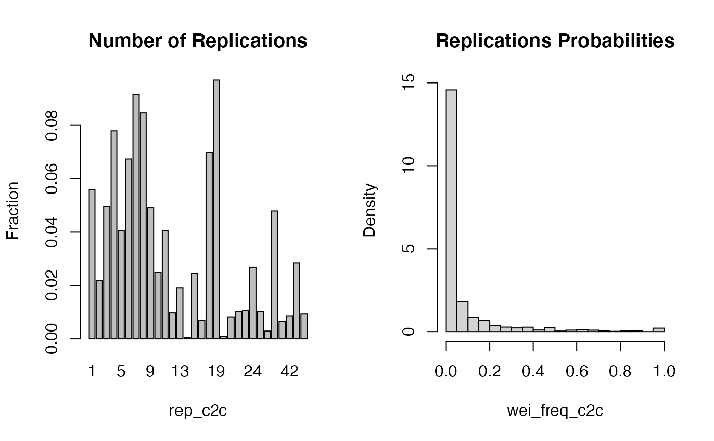
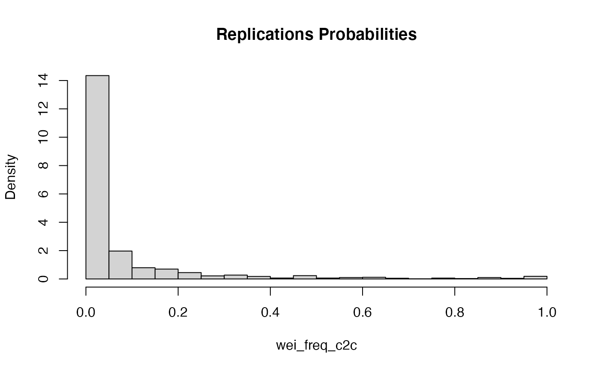
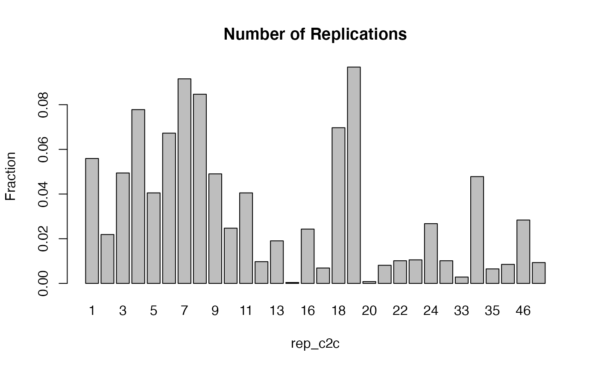

This function help to understand properties of cat2cat resuls and possibly before further preprocessing.
plot_c2c(data, weis = "wei_freq_c2c", type = "both")
| data | data.frame |
|---|---|
| weis | character - name of a certain wei_*_c2c column added by cat2cat function. Default wei_freq_c2c |
| type | character - one of 3 types both, hist, bar |
base plot graphics
It will work only for data.frame produced by cat2cat function.
data(occup_small) occup_old <- occup_small[occup_small$year == 2008, ] occup_new <- occup_small[occup_small$year == 2010, ] occup_2 <- cat2cat( data = list(old = occup_old, new = occup_new, cat_var = "code", time_var = "year"), mappings = list(trans = trans, direction = "backward") ) plot_c2c(occup_2$old, type = c("both"))